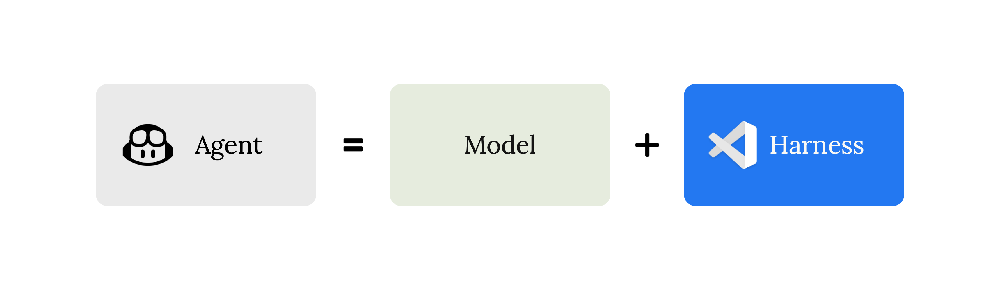
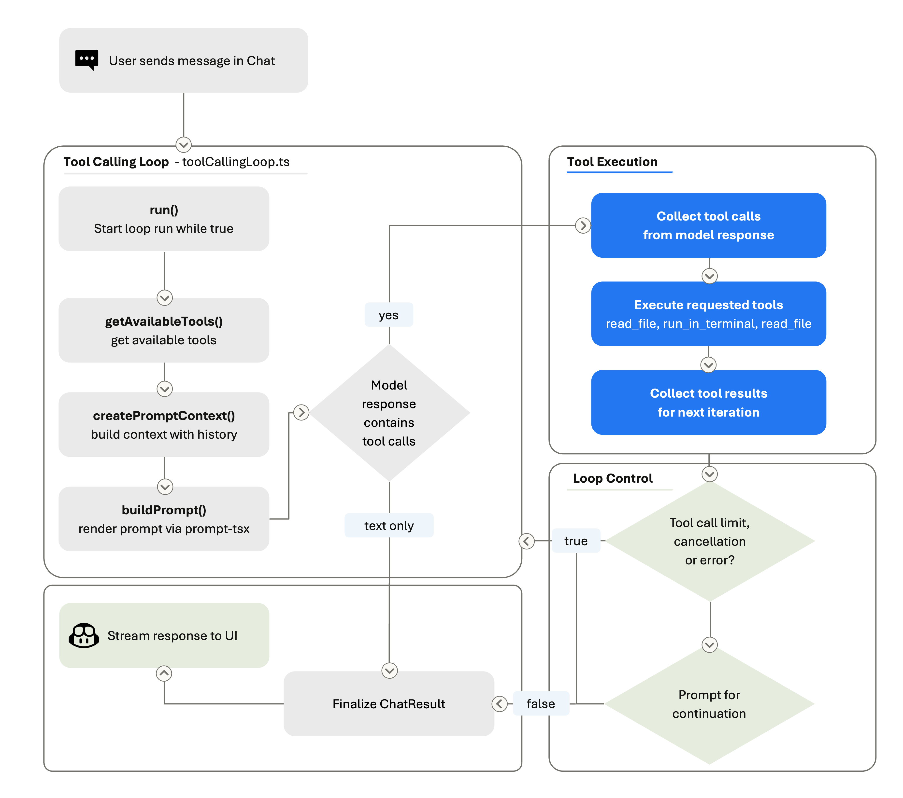
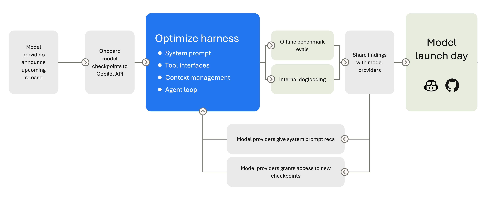
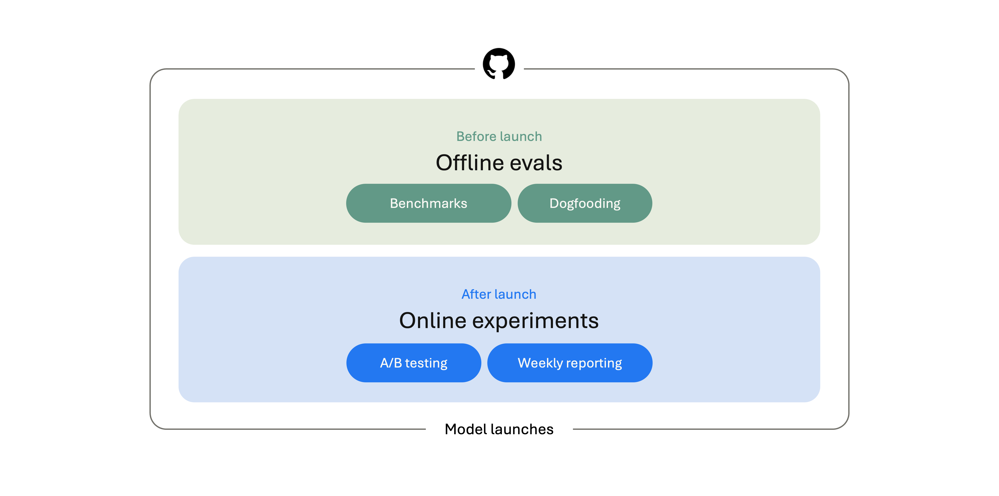
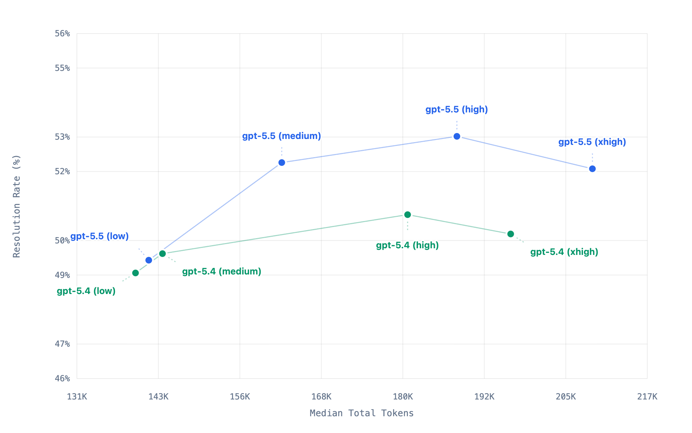
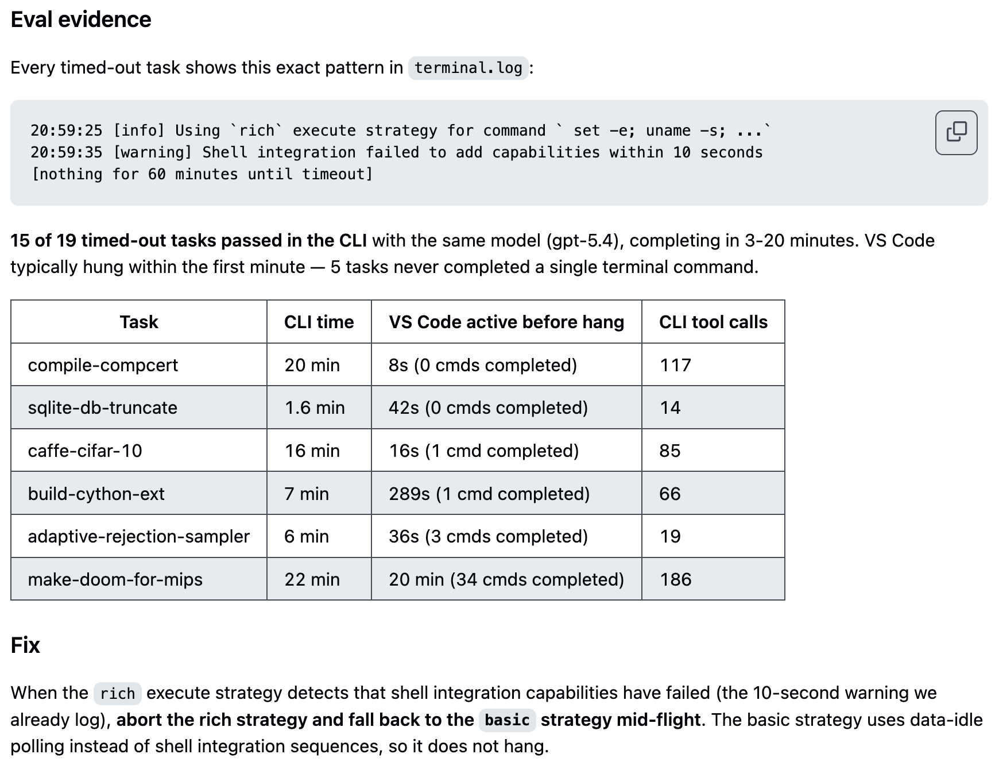

VS Code 中 GitHub Copilot 背后的编码框架
2026 年 5 月 15 日，作者 Julia Kasper、Megan Rogge 和 Aaron Munger
每当有新模型发布时，同样的讨论就会被重新点燃。哪个模型最聪明？哪个最快？我们应该用哪个？这些问题都很有用，但对于像 Visual Studio Code 这样的产品来说，模型只是智能编码体验的一部分。开发者实际与之交互的是编码框架：一个负责组装上下文、暴露工具、运行代理循环、解释工具调用，并将模型输出转化为编辑器中可用内容的层。在这篇文章中，我们将探讨这个框架做了什么、为什么重要，以及我们如何在模型和开发者工作流程不断演变的背景下对其进行评估。

什么是编码框架？
语言模型本身无法编辑文件、执行命令或运行测试。它们只能生成文本。编码框架是充当代码编辑器与语言模型之间桥梁的系统。它将文本转化为行动，并将结果反馈给模型，以便模型决定下一步该做什么。
在 VS Code 中，编码框架承担三项主要职责：
- 上下文组装：在任何请求到达模型之前，框架会构建一个提示。该提示包含行为指令的系统消息、用户的查询、工作区结构（语言、框架、打开的编辑器）、之前轮次的对话历史、工具执行结果、自定义指令以及来自之前会话的记忆。框架决定模型能"看到"什么，而这些决定直接影响输出质量。
- 工具暴露：框架声明模型可以调用的工具：读取文件（
read_file）、编辑代码（replace_string_in_file或apply_patch）、运行终端命令（run_in_terminal）、搜索代码库（semantic_search）等等。每个工具有一个模型必须遵循的 JSON schema，以及模型用来决定何时调用它的描述。可用工具集可能会根据每个请求而变化。某些工具只对特定模型启用，有些在执行前需要用户确认，用户可以在工具选择器中开关工具，MCP 服务器和扩展可以贡献全新的工具并接入同一循环，而自定义代理（.agent.md）可以将其工具集限制为特定的子集。 - 工具执行：当模型请求运行某个工具时（使用 JSON，例如
{"name": "run_in_terminal", "arguments": {"command": "npm test"}}），框架负责验证参数、运行工具、处理错误、格式化结果，并将其反馈回下一次迭代。例如，如果模型请求编辑文件，框架负责写入差异。如果模型请求运行 shell 命令，框架负责生成进程、捕获输出并将其回传。
这些任务都无法由语言模型直接完成。然而，这些输入决定了模型的行为和结果，以及你在代码编辑器中的体验。
协调这些任务、决定何时继续或停止迭代以及如何在多轮交互中保持对话连贯性的逻辑，就是代理循环。
代理循环
从本质上讲，当你在 VS Code 中使用代理时，会触发一个工具调用循环：一个"思考 → 行动 → 观察 → 再次思考"的周期。在每次迭代中，代理框架会构建提示（系统指令 + 上下文 + 历史记录 + 所有工具执行结果），将其发送给模型，并检查响应。如果响应中包含工具调用，框架将执行这些工具，捕获结果，并循环回去。如果没有工具调用，循环可以结束，助手的文本将成为最终回复。

一个轮次是用户可见的聊天交互：你发送一条消息，代理最终给出响应。在该轮次中，代理循环可能会执行多个回合。一个回合是循环中的一次完整通过：构建提示、调用模型、接收文本和/或工具调用、执行所有工具、记录结果，并决定是否继续。所有这些回合的完整执行构成了循环的运行。单个用户轮次可能触发多个回合，因为模型需要搜索文件、阅读代码、编辑文件、运行测试、读取输出并根据失败进行迭代。
工具调用循环受循环控制检查的限制。我们强制执行工具调用上限，在回合之间检查是否取消，并运行停止钩子。停止钩子是扩展点，可以检查代理状态，允许其完成或推动其继续工作。在循环内部，每次迭代都会重新构建提示。这意味着模型始终能看到工作区的最新状态：如果它在三个回合前编辑了一个文件，当前的提示会反映该编辑。框架还负责管理对话摘要。当累积的历史记录变得过大时，它会将较早的回合压缩为摘要，使模型能够继续工作而不会触及上下文窗口的上限。
注意：
想看看框架的实际运行情况吗？你可以探索 VS Code 源代码，使用聊天中的工具 UI 查看请求的可用工具，并打开聊天调试视图来检查提示、工具调用和结果。
框架就是产品
当新模型发布时，它需要适配现有的框架。系统提示、工具定义、循环逻辑、上下文组装——所有这些都经过了数月在真实场景中的构建和调优。模型在填补空白方面变得越来越好，但框架定义了空白是什么。
这一点更为重要，因为 GitHub Copilot 允许你使用来自多个模型提供商的不同模型。而 VS Code 中的 GitHub Copilot 支持一个不断增长的模型生态。开发者可以切换模型、使用自动选择、自带密钥，或通过扩展安装额外的提供商。这意味着 VS Code 必须面对一个广泛且不断演变的生态系统，而不是单一稳定的 API。
正是框架使 VS Code 能够处理这种模型灵活性，而无需开发者每次都要重新学习产品。你应该能够切换模型或尝试新的提供商，同时保持核心体验的熟悉感：聊天、会话、工具、终端输出、调试和源代码控制。
但集成新模型很少仅仅是在模型选择器中添加一个额外选项。提供商在如何暴露工具调用、结构化输出、推理控制、提示缓存、上下文限制和错误行为方面各有差异。有些模型擅长长期规划，有些则擅长精炼的编辑。每个模型有不同的优势，我们在每次发布前与模型提供商密切合作，相应地调整系统提示、工具描述和循环行为。提供商通常会在新模型正式发布前，让我们提前访问新的模型检查点——即即将推出的模型的预发布快照——以便我们在模型普遍可用之前就开始调整框架。

不同模型需要不同的框架行为。Claude 模型使用 replace_string_in_file 进行编辑；GPT 模型使用 apply_patch。Gemini 需要提醒使用工具调用而不是描述它，并会在历史记录中出现孤立工具调用时中断。某些模型支持扩展思考，需要推理努力程度的控制。有些模型使用简洁的系统提示效果最好，而另一些则需要冗长、结构化的指令才能保持在正轨。框架为每个模型选择不同的系统提示——Claude Sonnet 4 获得与 Claude 4.5 不同的提示，而 Claude 4.5 又与 Opus 不同。
所有这些针对模型的差异并非无关紧要。它们转化为针对模型的系统提示、针对模型的工具集和针对模型的对话管理。这意味着当新模型发布时，我们不能只是拨动开关，而是需要验证其行为。我们验证工具 schema、重新调整默认值，并在任何内容发布之前重新运行完整的代理会话。除了确保模型功能正确之外，更难的问题是如何验证新模型是否确实能带来更好的结果。
评估让框架保持诚实
正如你在发布新功能之前需要对其进行测试一样，模型也需要测试。这就是模型评估发挥作用的地方。在模型搭载到 VS Code 之前，我们从多个角度对其进行评估。我们运行离线基准测试、在内部进行测试，并将其与产品中已有的模型进行比较。模型上线后，我们持续进行测量：A/B 测试、聚合使用信号和每周报告帮助我们了解模型在真实开发者工作流程中的表现。

市面上有多个公开模型基准，它们作为共享参考点很有用。我们使用这些基准与更广泛的模型生态进行比较，并发现明显的回归。但在前沿水平上，它们已不足以作为质量指标。OpenAI 停止报告 SWE-bench Verified 结果，因为他们发现前沿模型有时能从记忆中复现黄金补丁，使得污染更难被忽视。
覆盖范围是另一个限制。SWE-bench 很有价值，但它仍然集中在公开的 bug 修复任务上。Terminal-Bench 对衡量命令行能力很有用，但很多任务看起来更像是孤立的终端谜题，而非开发者实际带到编辑器中的工作流程。现实世界的编码代理需要做的不仅仅是修补一个已知的 bug 或解决一个 shell 挑战。它们需要搭建项目、迁移代码库、跨文件重构、遵循指令，并处理终端和浏览器。
我们仍然运行这些基准测试，但它们只是一个起点。要决定哪些模型可以在 VS Code 中发布，我们需要一些更接近我们正在构建的产品的评估方式。
构建 VSC-Bench
这就是我们构建 VSC-Bench 的原因——我们用于 VS Code 代理行为的离线评估套件。VSC-Bench 专注于公开基准测试无法很好覆盖的 VS Code 特定开发者任务：自定义代理模式、扩展工作流程、MCP 和工具使用、终端和浏览器交互、多轮对话，以及跨 TypeScript、Python、C++ 等多种语言的多语言编码任务。
我们使用 VSC-Bench 来衡量模型行为在解决方案正确性、代理努力程度、token 效率和延迟方面的表现。下面的图表聚焦于解决率和 token 使用量，但在模型成为 VS Code 体验的一部分之前，我们会评估所有维度的完整集合。在模型或推理设置成为编辑器中的默认选项之前，这种权衡至关重要。

此图表总结了在八种模型-努力程度配置上的 40 次 VSC-Bench 运行。每个点代表一种模型-努力程度配置，越高的点解决的任务越多，越靠右的点使用的 token 越多。对于这组 VSC-benchmark 任务，xhigh 比 high 使用更多 token，但解决的任务略少，这可能表明它已经超过了有效努力的最佳点，在该点上额外的思考不再转化为更好的结果。
每个 VSC-Bench 任务都在可复现的容器化工作区中运行。框架启动 VS Code，打开工作区，向代理发送一个或多个用户提示，让代理以文本和工具调用进行响应，然后评估发生了什么。这让我们对完整的代理循环有了更真实的了解：不仅仅是最终代码看起来是否正确，而是代理是否以符合 VS Code 体验的方式使用了编辑器、终端、语言服务、浏览器和工具。
与公开基准一起，VSC-Bench 为我们提供了更平衡的信号：公开评估告诉我们模型与领域的比较情况，而产品特定评估告诉我们它是否已准备好提供开发者在 VS Code 内部期望的体验。
我们如何在合并前对代理更改进行基准测试
基准测试不仅仅用于发布模型。它们也是我们在框架变更落地前对其进行审查的方式。如果一个 PR 触及核心工具、系统提示或其他可能影响代理行为的任何内容，我们需要在合并前获得基准测试数据。
对于这些 PR，VS Code 团队使用自动化的评估工作流。向 PR 添加 _~requires-eval-assessment_ 标签会启动流程：PR 被构建、作为评估代理发布、进行基准测试，结果被传回 PR：
- 构建 PR。 一个 webhook 将标签事件路由到
vscode-engineering中的一个工作流，该工作流针对 PR 的合并引用启动 Azure DevOps 构建。失败时自动重试一次；PR 会收到"queued 1 of 2"的评论，以便审阅者可以跟踪进度。 - 发布评估代理。 在构建成功后，发布流水线将版本化代理（
0.0.0-dev.）发布到vscode-evalsnpm 源的dev标签上。PR 评论变为"queued 2 of 2"。 - 提交 evald 问题。 发布流水线向
vscode-engineering发送repository_dispatch，后者在github/evald上打开一个模型评估问题，该问题精确指向该发布的代理。 - 报告结果。 evald 运行基准测试、监控它并生成分析评论。一个 Azure Logic App 仅将评论 URL（而不是分析主体——分析主体在 evald 上保持私密）作为另一个
repository_dispatch转发回来，该转发在原始 VS Code PR 上发布一个链接。

模型是引擎，框架是汽车
我们从开发者每几个月就会问的问题开始：哪个模型最好？但对于编码代理来说，这个问题有点像在问：哪个引擎最好？引擎很重要，但仅凭引擎本身是不够的。模型看到的上下文、它能够触及的工具、让它持续运行的循环，以及确保一切正常工作的评估——这些才是关键。这就是框架，也是我们大部分工程时间投入的地方。
随着模型获得新能力，如更长的上下文、更好的规划和原生工具使用，框架也在不断演变以利用这些能力。而随着开发者将代理模式推向新的工作流程，我们将学到的东西反馈到循环、工具和评估中。每个 VS Code 发布版本都会在模型更新之外提供框架改进。
如果你对框架的工作原理感到好奇，现在就可以亲身体验。探索 VS Code 源代码，使用聊天中的工具 UI 查看某个请求可用的工具，并打开聊天调试视图来检查代理运行背后的提示、工具调用和结果。尝试切换模型，添加你自己的工具，并告诉我们哪些有效——在我们的 GitHub 仓库中分享你的反馈。
祝编程愉快！💙